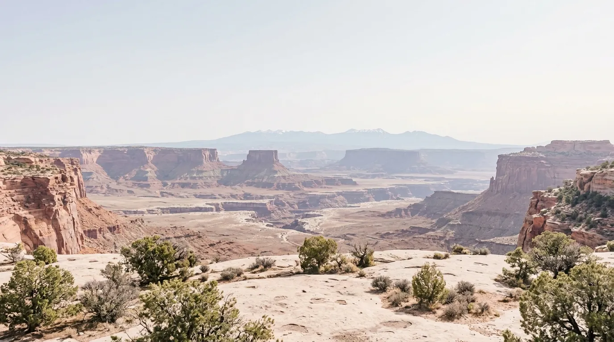
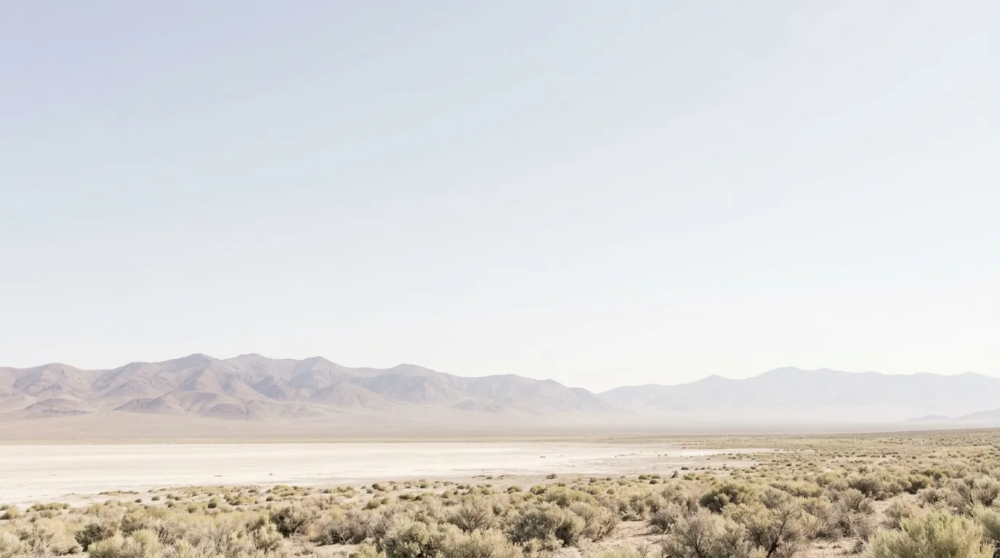
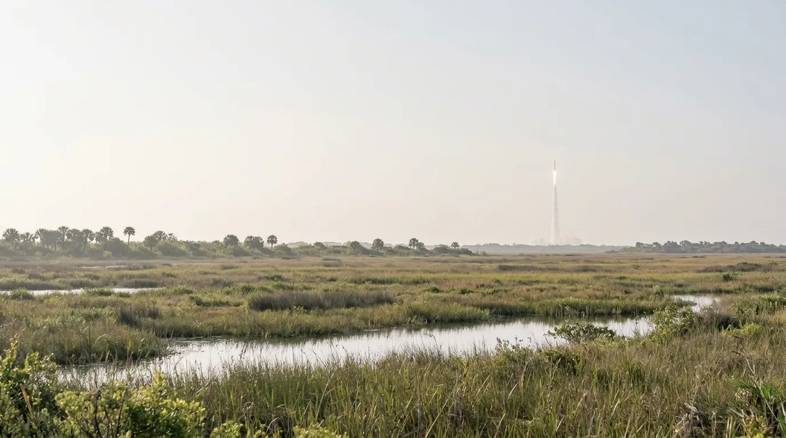
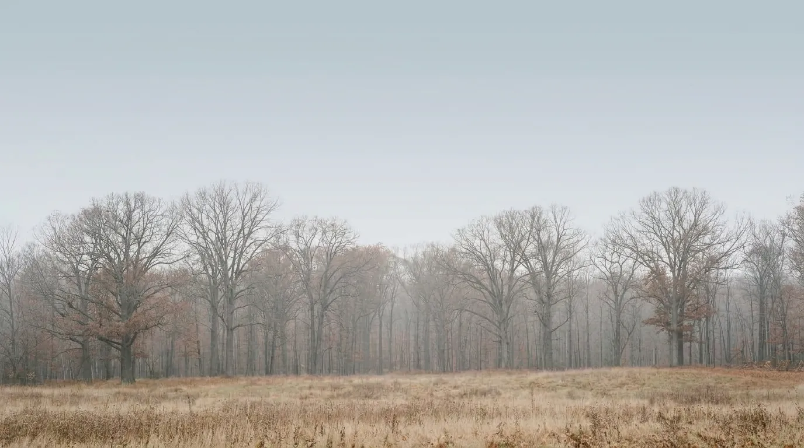
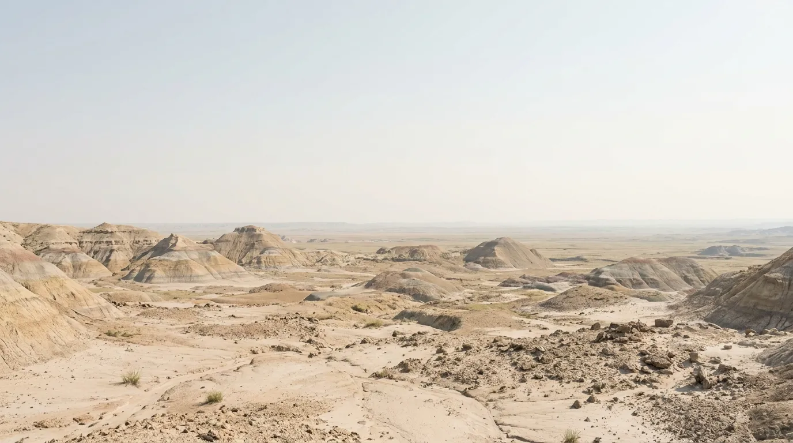
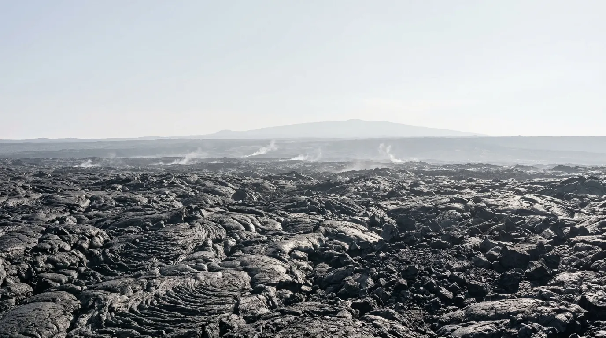

Island in the Sky, Utah38°27′ N 109°47′ W
Groom Lake, Nevada37°14′ N 115°48′ W
Cape Canaveral, Florida28°35′ N 80°38′ W
Bikini Atoll, Marshall Islands11°41′ N 165°27′ E
Ashland, Wisconsin46°11′ N 90°28′ W
Hell Creek, Montana47°31′ N 106°57′ W
Kīlauea, Hawaiʻi19°29′ N 154°52′ W


Explore decades of aerial imagery
from public sources including USGS, USDA, NASA, and NOAA.

Render dozens of data layers
including geology, hydrology, topography, boundaries, and more.
Plot and measure paths and polygons
Distance, area, and perimeter in metric or imperial.

Add custom overlay images
and snap them into place with auto-alignment tools.

Mark and label points of interest
Attach photos, notes, and files.

Import and export common GIS file formats
including GeoJSON, KML, GPX, CSV, and more.